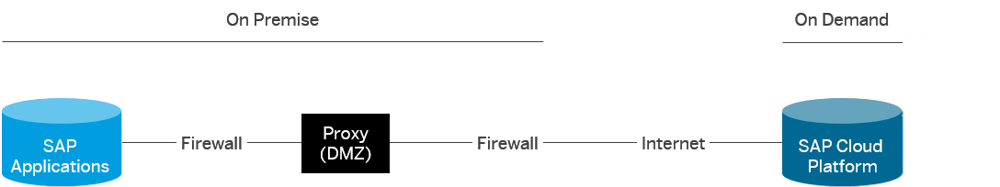

Connectivity via Reverse Proxy
This section outlines an alternative approach for technical connectivity between the cloud and on-premise, using a reverse proxy. It also discusses the pros and cons of this method compared to when you use the Cloud connector.
An alternative approach compared to the SSL VPN solution that is provided by the Cloud connector is to expose on-premise services and applications via a reverse proxy to the Internet. For this method, there is typically a reverse proxy setup in the "demilitarized zone" (DMZ) subnetwork of a customer, which:
- Acts as a mediator between SAP Cloud Platform and the on-premise services;
- Provides the services of an Application Delivery Controller (ADC) in order, for example, to encrypt, filter, route, or introspect the inbound traffic.
The figure below shows the minimal overall network topology of this approach. For
more information, see Technical Connectivity Guide .
.
On-premise services accessible via a reverse proxy are then callable from SAP Cloud Platform like other HTTP services available on the Internet. When you use destinations to call those services, make sure that the configuration of the ProxyType parameter is set to Internet.

Depending on your scenario, you can benefit from the reverse proxy. An example is the required network infrastructure (such as a reverse proxy and ADC services): since it already exists in your network landscape, you can reuse it to connect to SAP Cloud Platform. In this case, there would be no need to set up and operate new components on your (customer) side.
- The reverse proxy approach does not prevent the exposed services from being generally accessible via the Internet, which makes them vulnerable to attacks from anywhere in the world. Denial-of-Service attacks in particular are possible and difficult to protect against. Therefore, protection against potential attacks requires the highest security standards to be implemented in the DMZ and reverse proxy. For the productive deployment of a hybrid cloud/on-premise application, this approach usually requires intense involvement of the customer's IT department and a longer period of implementation.
- If the reverse proxy is set to allow filtering or restriction of accepted source IP
addresses, you can only set one single IP address to be used for all SAP Cloud Platform outbound
communications.
Although it filters any callers that are not running on the cloud, the reverse proxy does not exclusively restrict the access to cloud applications belonging to the related customer. Basically, any application running on the cloud would pass this filter.
- SAP-proprietary RFC protocol is not supported, so that a cloud application cannot directly call an on-premise ABAP system without having application proxies on top of ABAP.